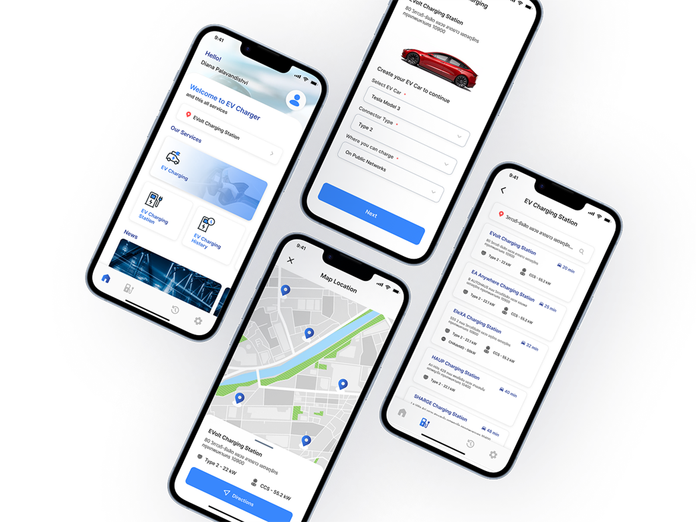

[Category]
[Project Name]
[One-sentence summary]

01
The Problem
[What was broken or missing before this project?]
[Any constraint worth mentioning — timeline, technical, stakeholder.]
02
Process
[Research, discovery, key decisions along the way.]
[The one line worth pulling out of the section above.]
03
The Solution
[Describe the final design and why it works.]
Screen 1
Screen 2
Screen 3
04
Results
[Summary of the outcome/impact.]
[XX%][What this measures]
[XX%][What this measures]
[XX%][What this measures]